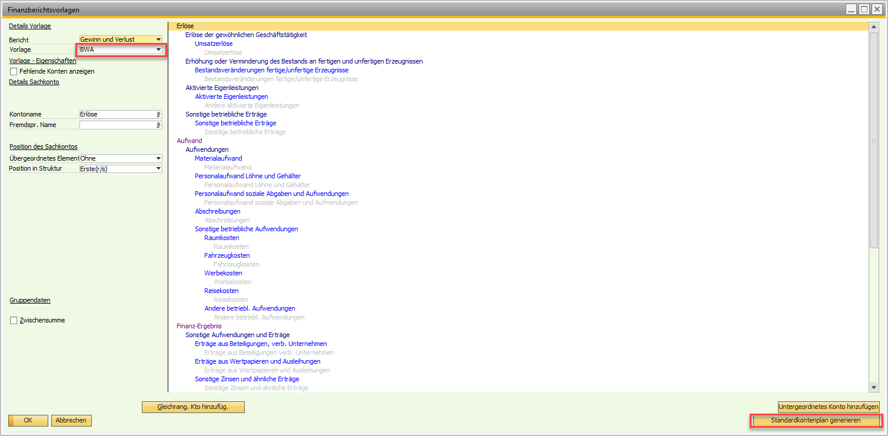

Berichtserweiterungspaket (Reporting)
Überblick
Das Versino Reporting Modul ist das zentrale Berichtssystem der Financial Suite. Es bietet eine umfangreiche Sammlung vorgefertigter Crystal Reports und arbeitet vollständig im Hintergrund, um Ihnen die passenden Auswertungen bereitzustellen. Ein wesentlicher Vorteil ist, dass das Modul automatisch erkennt, ob Sie eine Microsoft SQL Server oder SAP HANA Datenbank verwenden, und die entsprechenden, performance-optimierten Berichte lädt.
Das Modul startet asynchron, ohne die SAP Business One Oberfläche zu blockieren, und erkennt automatisch Ihre Systemsprache. Zugang zu den Berichten: Alle Berichte finden Sie im SAP Business One Menü unter Versino Financial Suite > Financial Suite Berichte.
Hauptfunktionen
Das Modul bietet zwei Arten von Berichten, um unterschiedliche Anforderungen abzudecken:
Standard-Berichte
Diese Berichte können direkt gestartet werden und bieten schnelle Auswertungen. Die Filterung (z.B. nach Datum) erfolgt direkt im Crystal Reports Viewer.
- Kassenbuch: Zeigt alle Kassenbewegungen chronologisch mit laufender Saldierung.
- Kontoauszug Sachkonten: Detaillierte Bewegungslisten für ausgewählte Sachkonten.
- Offene Posten Kunden: Übersicht über unbezahlte Forderungen mit Fälligkeitsanalyse.
- Summen- und Saldenliste (SuSa): Kompakte Übersicht aller Konten.
- Top 10 Kunden/Lieferanten: Ranking der wichtigsten Geschäftspartner.
- Zahlungsmoral: Analyse des Zahlungsverhaltens von Kunden.
- BWA: Monatliche betriebswirtschaftliche Auswertung.
Massen-Berichte
Diese Berichte bieten vor dem Start spezielle Filterdialoge, um gezielte Massenverarbeitungen durchzuführen.
- Saldenbestätigung: Erstellt separate Bestätigungsschreiben für beliebig viele Kunden zu einem wählbaren Stichtag.
- Netting Abstimmungen: Dokumentiert durchgeführte Netting-Vorgänge.
- Zahlungsavis: Erstellt detaillierte Zahlungsavise für einen bestimmten Zahllauf.
Ausgabeoptionen
Alle Berichte können direkt angezeigt, gedruckt oder in Formate wie PDF, Excel oder Word exportiert werden. Bei Massen-Berichten werden automatisch individuelle Dateinamen vergeben (z.B. "Saldenbestätigung_[Kundencode].pdf").
Anwendung
Standard-Bericht anwenden (z.B. Kontoauszug)
- Navigieren Sie zu Versino Financial Suite > Financial Suite Berichte > Kontoauszug Sachkonten.
- Ein Filter-Dialog öffnet sich. Geben Sie den gewünschten Zeitraum, die Sachkonten ein und den Anzeigetyp (B1-Form oder als externes Windows-Form).
- Klicken Sie auf "OK". Der Bericht wird generiert.
- Nutzen Sie die Export-Funktionen des Viewers, um den Bericht zu speichern.
Massen-Bericht anwenden (z.B. Saldenbestätigung)
- Wählen Sie den Bericht Saldenbestätigung.
- Füllen Sie die Filterfelder im erscheinenden Dialog aus (z.B. Stichtag, Geschäftspartner).
- Starten Sie die Berichterstellung. Das System erstellt automatisch separate Dateien für jeden ausgewählten Kunden.
Tipps und Fehlerbehandlung
Problem: Ein Bericht ist leer oder zeigt keine Daten an.
Lösung: Überprüfen Sie Ihre Filtereinstellungen, insbesondere den Datumsbereich. Stellen Sie sicher, dass für die gewählten Kriterien tatsächlich Daten in der Datenbank vorhanden sind.
Problem: Die Berichte starten langsam.
Lösung: Beim allerersten Start eines Berichts nach dem Öffnen von SAP Business One kann die Initialisierung einen Moment dauern. Dies ist normal. Nachfolgende Berichte sollten schneller laden.
Problem: Die Performance bei großen Datenmengen ist langsam.
Lösung: Die Berichte sind bereits für SQL und HANA optimiert. Um die Abfrage bei sehr großen Datenmengen weiter zu beschleunigen, schränken Sie die Filterkriterien (z.B. ein kürzerer Datumsbereich) so weit wie möglich ein.
Problem: Crystal Reports funktioniert nicht oder es gibt eine Fehlermeldung bei der Datenbankverbindung.
Lösung: Stellen Sie sicher, dass die Crystal Reports-Komponenten für SAP Business One korrekt installiert sind. Überprüfen Sie Ihre Datenbankverbindung und starten Sie SAP Business One neu. Bei anhaltenden Problemen kontaktieren Sie Ihren Administrator.
Problem: BWA Report lädt nicht.
Lösung: Stellen Sie sicher, dass die Finanzberichtsvorlage BWA angelegt ist. Sie finden das Menü unter Finanzwesen > Finanzberichtsvorlage . Sollte dies nicht der Fall sein, können Sie diese selbst anlegen (wie im Bild dargestellt). Der Standardkontenplan kann via Button automatisch geladen werden. Bei anhaltenden Problemen kontaktieren Sie Ihren Administrator.
